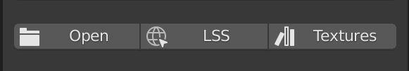
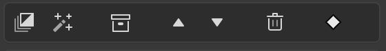

What does "supported addons" mean?
At the moment there are two addons that are officially "supported" by Layer Painter. This means that if you have them installed, some of their features are integrated into the Layer Painter workflow in some form.
This does not mean that the code of these addons is in Layer Painter. If you don't have them installed and don't want to, you can disable their information buttons in the settings.
There is also unofficial support for the Extreme PBR addon. This means that you can use the textures provided by that addon in your Layer Painter materials. You can add the paths to the Extreme PBR textures to your custom texture assets to see them with a thumbnail preview.
Lily Surface Scrapper
This addon by Élie Michel allows you to import textures from a URL. This means you can for example go to texturehaven.com and select a textureset. Then copy the URL and enter it in the addons popup.
The addon is supported like this:
When you're editing a Layer, you can press the LSS button and enter the URL. Layer Painter will then import the downloaded textures and try to apply them to the correct channel.

This will speed up your workflow a lot, because you don't have to download and select your textures manually, but can just enter the URL and the rest will happen for you.
You can find the addon here.
Atomic Data Manager
This addon by Grant Wilk allows you to clean and organize your blend files. You can get statistics about the objects, images, materials and much more in your file.
The addon is supported like this:
There is a small white indicator in the Layer settings panel, which will show you if there are any unused images in your file. When the indicator turns red, you can click it, which will open a popup where you can remove the unused textures.

This will keep your files clean when working with a lot of textures.
You can get the addon here.